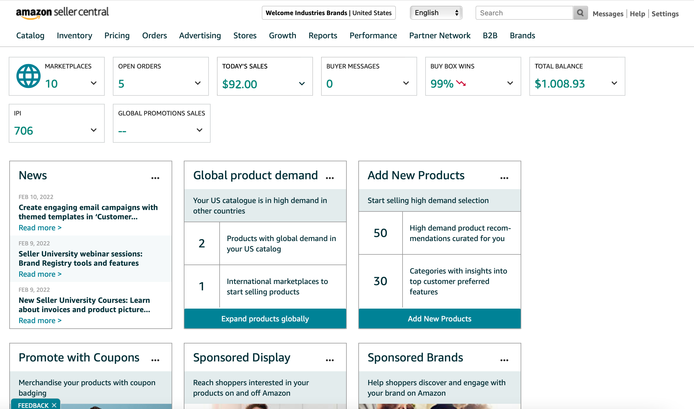

timeline: one week
role: designer, ux researcher
class: UX Design (Bay Area Immersion Program)
skills: design research, graphic design, ux design, interface design
the project
The goal: to create or redesign a dashboard screen.
I chose to redesign the Amazon Sellers interface, a system that my professor uses for her company but finds extremely unintuitive.
the process
Below is the busy, confusing dashboard that Amazon Sellers currently displays for its users.
I began by talking to my professor about what functions she uses most, what pain points she experiences and what she would like to see emphasized in a redesign.
The root of the dashboard’s problem comes from the information overload the interface currently displays.
My professor tends to use the sales, inventory, and advertising functions the most, while most of the other sections aren’t helpful for her on an everyday basis (and for some, not ever!).
I set the three helpful widgets to cover the dashboard’s face. This way, the number of clicks to get to useful information is minimized. I then moved the other sections to a slide-out menu that can be accessed through the top navigation bar – they might come in handy to my professor at some point, in which case she can open the side menu.
the solution
My redesign focuses on simplicity and usability.

It displays the most-used functions prominently, hides the less-used features and allows user customization to fit individual needs; in addition, notifications that require user action are easily noticeable. I also incorporated Amazon's colors rather than a monochromatic selection of blues, meshing the dashboard with the company's brand at a glance.
There’s a lot more that could be done to redesign this Amazon seller’s homepage, but I think this is a good starting point. I did my best to streamline the experience and make the user’s most common uses in the dashboard easy to reach, and I think it’s an improvement from the original!